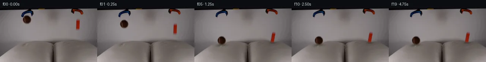

![首帧]()

Round 00
2026-11-04T18:59:38.747960+00:00像素候选变化代码 +228/−0inspection 更新
pixels 2faf0beb4c336dfb · code 5a44a8bb8bd3218b
查看本轮 generate.py 真实 diff
--- previous/generate.py
+++ current/generate.py
@@ -0,0 +1,228 @@
+"""Local source-pixel animation of a soft-pillow drop, with no external assets."""
+from pathlib import Path
+import json
+import numpy as np
+import cv2
+from PIL import Image, ImageDraw
+from artifact_io import save
+
+ROOT = Path(__file__).resolve().parent
+SOURCE = np.array(Image.open(ROOT / 'first_frame.png').convert('RGB'))
+H, W = SOURCE.shape[:2]
+Y, X = np.mgrid[:H, :W].astype(np.float32)
+
+
+def smoothstep(a):
+ a = np.clip(a, 0, 1)
+ return a * a * (3 - 2 * a)
+
+
+def wall_reconstruction(cx, cy, rx, ry, box):
+ """Fit the smooth wall from nearby gray source pixels; replace only a feathered ellipse."""
+ x0, y0, x1, y1 = box
+ region = (X >= x0) & (X <= x1) & (Y >= y0) & (Y <= y1)
+ radius = ((X - cx) / rx)**2 + ((Y - cy) / ry)**2
+ rgb = SOURCE.astype(np.float32)
+ gray = (rgb.min(axis=2) > 90) & (np.abs(rgb[..., 0] - rgb[..., 1]) < 13)
+ gray &= np.abs(rgb[..., 1] - rgb[..., 2]) < 9
+ sample = region & gray & (radius > 1.12)
+ u, v = (X - cx) / 30, (Y - cy) / 30
+ terms = np.stack([np.ones_like(X), u, v, u*u, u*v, v*v], -1)
+ coefficients = np.linalg.lstsq(terms[sample], rgb[sample], rcond=None)[0]
+ wall = terms @ coefficients
+ blend = 1 - smoothstep((np.sqrt(radius) - 0.91) / 0.12)
+ # Restore very fine wall grain without copying any object pixels.
+ grain = np.random.default_rng(int(cx)).normal(0, .35, (H, W, 1))
+ wall = wall + grain
+ return wall.astype(np.float32), blend.astype(np.float32)
+
+
+ball_wall, ball_remove = wall_reconstruction(71, 30.5, 12.1, 13.4, (45, 23, 98, 65))
+block_wall, block_remove = wall_reconstruction(205, 44, 8.5, 18.5, (184, 23, 225, 73))
+clean = SOURCE.astype(np.float32)
+for wall, mask in [(ball_wall, ball_remove), (block_wall, block_remove)]:
+ clean = clean * (1 - mask[..., None]) + wall * mask[..., None]
+
+
+def make_sprite(kind, wall):
+ """Recover a soft matte and remove original gray background from edge pixels."""
+ rgb = SOURCE.astype(np.float32)
+ if kind == 'ball':
+ # Geometric support excludes the adjacent blue jaw from the ball matte.
+ radius = np.sqrt(((X - 71) / 11.4)**2 + ((Y - 30.5) / 12.8)**2)
+ support = 1 - smoothstep((radius - .91) / .14)
+ contrast = np.maximum(wall[..., 1] - rgb[..., 1], wall[..., 2] - rgb[..., 2])
+ alpha = np.clip(contrast / 112, 0, 1)
+ core = np.sqrt(((X - 71) / 9.6)**2 + ((Y - 30.5) / 9.8)**2)
+ alpha = np.maximum(alpha, 1 - smoothstep((core - .82) / .25))
+ alpha *= support
+ else:
+ region = ((X >= 198) & (X <= 212) & (Y >= 27) & (Y <= 61)).astype(float)
+ chroma = (rgb[..., 0] - rgb[..., 1]) - (wall[..., 0] - wall[..., 1])
+ alpha = np.clip(chroma / 106, 0, 1) * region
+ # The red core is opaque; top/bottom feathering is inherited from the photograph.
+ core = (X >= 201.7) & (X <= 208.3) & (Y >= 34) & (Y <= 52)
+ alpha[core] = 1
+ alpha *= 1 - smoothstep((np.abs(X-205) - 5.5) / 1.5)
+ alpha = alpha.astype(np.float32)
+ premult = rgb - wall * (1 - alpha[..., None])
+ premult = np.maximum(0, np.minimum(premult, 255 * alpha[..., None]))
+ premult[alpha < .008] = 0
+ alpha[alpha < .008] = 0
+ return premult, alpha
+
+
+BALL = make_sprite('ball', ball_wall)
+BLOCK = make_sprite('block', block_wall)
+
+
+def transform_sprite(canvas, sprite, center, target, angle=0, scale=(1, 1), exposure=1):
+ a = np.deg2rad(angle)
+ linear = np.array([[np.cos(a)*scale[0], -np.sin(a)*scale[1]],
+ [np.sin(a)*scale[0], np.cos(a)*scale[1]]], dtype=np.float32)
+ translation = np.array(target) - linear @ np.array(center)
+ affine = np.column_stack([linear, translation]).astype(np.float32)
+ premult, alpha = sprite
+ p = cv2.warpAffine(premult, affine, (W,H), flags=cv2.INTER_LINEAR)
+ m = cv2.warpAffine(alpha, affine, (W,H), flags=cv2.INTER_LINEAR)
… diff truncated; 141 more lines …